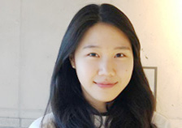

신용개발
덮어놓고 긁다 보면
거지꼴을 못 면한다.
신기술만 쓰다 보면
기술부채 못 면한다.
Twitter Korea Creator Program 2022
@winterwolf0412
로토
님과 함께 하는
신용개발
스페이스
1화
6월 22일
수요일 밤 11시
과도한 기술 사용은 극심한 스트레스와
만성피로를 불러일으킬 수 있습니다.
분실 신고는 트위터에서 받지 않습니다.
Twitter Korea Creator Program 2022

@seojeee
치즈
님과 함께 하는
신용개발
스페이스
2화
6월 29일
수요일 밤 11시
과도한 기술 사용은 극심한 스트레스와
만성피로를 불러일으킬 수 있습니다.
분실 신고는 트위터에서 받지 않습니다.
Twitter Korea Creator Program 2022
@velopert
민준
님&
강혁
님과 함께 하는
신용개발
스페이스
3화
7월 6일
수요일 밤 11시
과도한 기술 사용은 극심한 스트레스와
만성피로를 불러일으킬 수 있습니다.
분실 신고는 트위터에서 받지 않습니다.
Twitter Korea Creator Program 2022
@trustin
희승
님과 함께 하는
신용개발
스페이스
4화
7월 12일
화요일 밤 11시
과도한 기술 사용은 극심한 스트레스와
만성피로를 불러일으킬 수 있습니다.
분실 신고는 트위터에서 받지 않습니다.